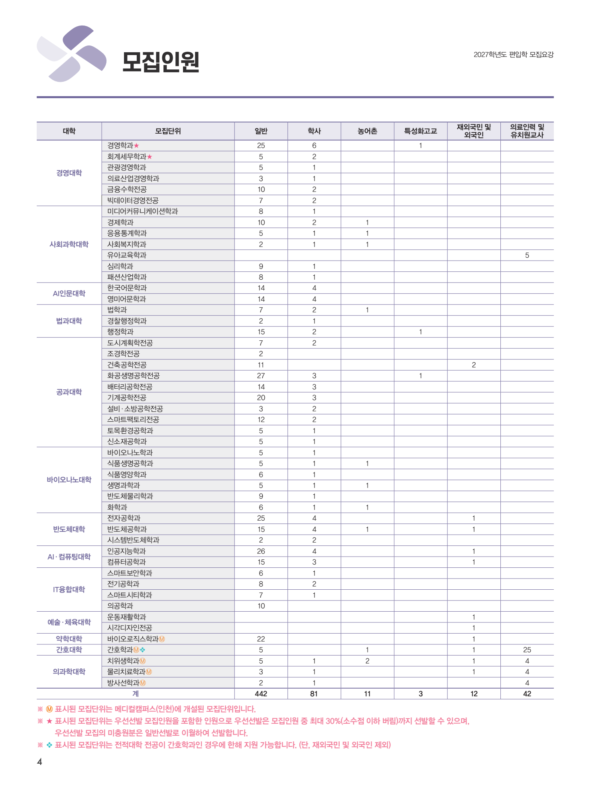

2027학년도 편입
대학별 모집인원

학과별 표로 보기
빈칸은 원문 미기재입니다. Ⓜ는 메디컬캠퍼스입니다. 우선선발은 일반 경영학과·회계세무학과와 학사 경영학과 모집인원에 포함되며, 최대 30%에서 소수점 이하는 버립니다. 간호학과는 재외국민 및 외국인을 제외하고 전적대학 간호학과 전공자만 지원할 수 있습니다.
2027학년도 편입

빈칸은 원문 미기재입니다. Ⓜ는 메디컬캠퍼스입니다. 우선선발은 일반 경영학과·회계세무학과와 학사 경영학과 모집인원에 포함되며, 최대 30%에서 소수점 이하는 버립니다. 간호학과는 재외국민 및 외국인을 제외하고 전적대학 간호학과 전공자만 지원할 수 있습니다.